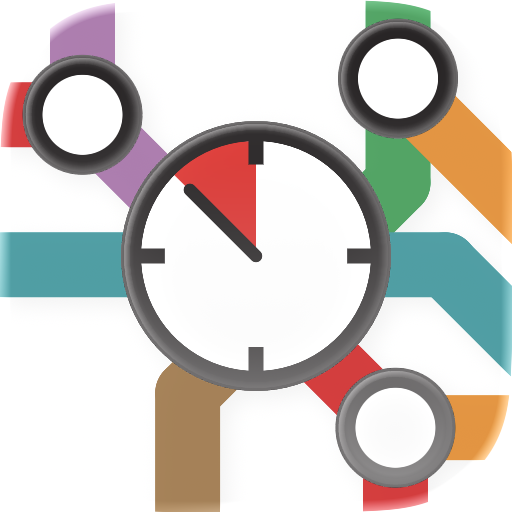

Unabhängige App · keine offizielle App der Wiener Linien

Hab ich noch Zeit, oder muss ich laufen?
Eine iPhone-App für die Wiener Öffis.
Keine Eile verbindet die Echtzeit-Abfahrten der Wiener Linien mit deinem Weg zur Haltestelle und sagt dir auf einen Blick, ob du noch Zeit hast.
U1
LeopoldauPraterstern · 4 Min.
in 9 Min.in 5 Min. losgehen
5B
Bhf. HeiligenstadtPraterstern · 3 Min.
in 4 Min.jetzt losgehen
O
Bruno-Marek-AlleePraterstern · 5 Min.
in 3 Min.Eile!
Grün: Du hast Zeit. Orange: Mach dich auf den Weg. Rot: nur, wenn du dich beeilst.
Echtzeit-AbfahrtenDirekt von den Wiener Linien, mit Verspätungen und Störungen.
Dein WegEchte Gehzeiten, und die App kann dein eigenes Tempo lernen.
Widgets und SiriAm Home-Bildschirm, am Sperrbildschirm und in der Dynamic Island.
PrivatKein Konto, kein Tracking. Deine Daten bleiben auf deinem iPhone.
Auf einen Blick
- Gerät
- iPhone, ab iOS 18
- Sprachen
- Deutsch, Englisch
- Gebiet
- Wien: U-Bahn, Straßenbahn und Bus der Wiener Linien
- Daten
- Echtzeit-Abfahrten aus der Open Data der Wiener Linien; Gehzeiten von Apple Karten
- Konto
- Nicht nötig
- Verfügbarkeit
- Bald im App Store